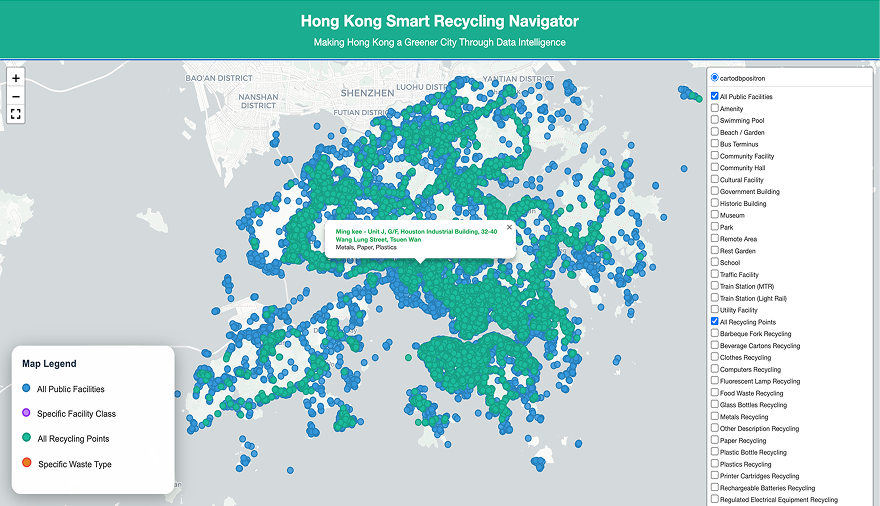
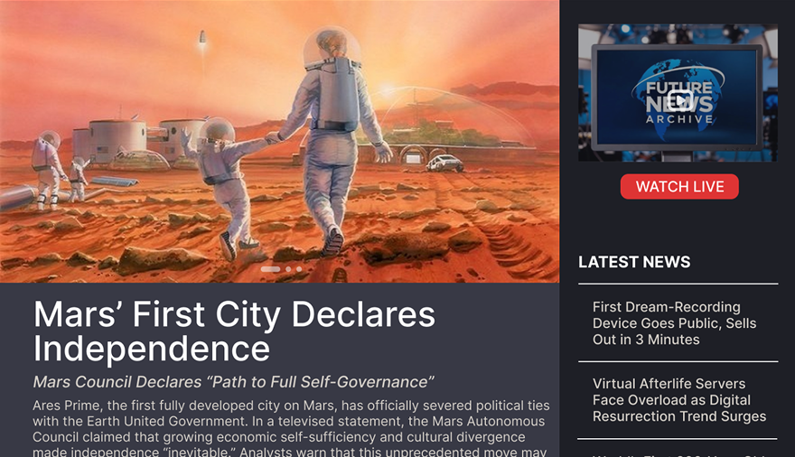
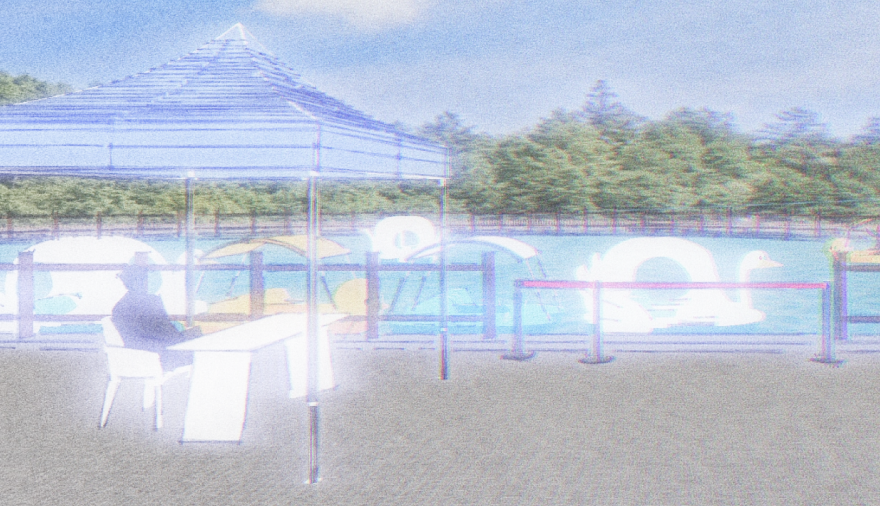
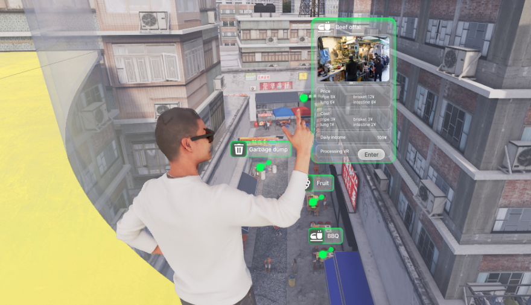
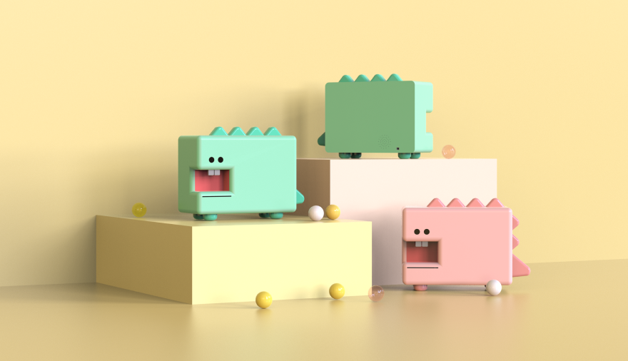

AI & Data Specialist | Business Intelligence | Creative Designer
Final-year AI and Digital Media MSc student at Hong Kong Baptist University, specializing in transforming complex datasets into visual narratives to drive business decisions.

A project seeking to integrate fragmented datasets into interpretable and actionable views of recycling infrastructure for both citizens and urban planners.

A speculative project exploring a 2100 news website, presenting AI-generated stories to explore futuristic topics.

A nostalgic, first-person narrative game about Chinese Dreamcore, allowing players to return to 2008 and make up for childhood regrets.

A future MR space design functioning as a 'Poverty Zoo' for the wealthy, helping them understand low-income lives and foster empathy.

A children's product with NFC functions for popularizing traditional Chinese medicine, recording medication, and rewarding children.
+852 84951271
KinleyLiao@gmail.com
Hong Kong